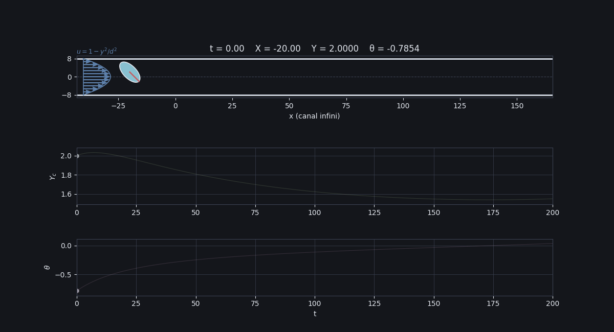

Je présente ici le sujet de mon stage à l'Université de Bruxelles libre, l'Inria et la Sorbonne Université, sous la direction de Denis Bonheure, Céline Grandmont et Fabien Vergnet.
La mécanique des fluides autour d'une particule
Que se passe-t-il lorsqu'une petite particule se déplace dans un fluide ?
Et surtout : que change la présence d'une paroi ?
Le problème
On se donne une particule plongée dans un fluide. Typiquement la particule est très petite et se déplace poussée par le fluide dans un canal. Pour plus de facilité et pour briser la symétrie parfaite, on va supposer que notre particule est ovale. On va aussi supposer que notre écoulement est 'laminaire', ce qui signifie qu'il est très calme. On peut par exemple imaginer (TO DO : Trouver des exemples) On est alors en régime de Stokes. Nous sommes parti du papier de Sugihara-Seki TO DO : citation.
Les équations
On note $B$ la particule et $X_B := (X_c, Y_c)$ son centre, $a$ et $b$ ses rayons. Notre canal est représenté par $\Omega = \mathbb{R} \times [-d,d]$ pour $d>0$ fixé. Alors le fluide évolue dans le domaine $\Omega \setminus B$. Comme la particule se déplace dans le temps, on a que $B= B(t)$ et donc que le domaine dans lequel le fluide se déplace change avec le temps. C'est donc un système dynamique ! Dans le régime de Stokes, le mouvement du fluide est décrit par les équations suivantes :
\[ -\Delta u + \nabla p = 0 \quad \text{dans } \Omega(t). \] \[ \operatorname{div}(u)=0. \] \[ u=0\text{sur} \partial\Omega(t) \] \[ u(t,x) = \dot{X}_B + \dot{\theta}(x - X_B )^\perp, \text{ pour } x \in \partial B(t). \]On rajoute de plus deux équations qui vont nous permettre de résoudre notre système dynamique :
\[ \int_{\partial B}] \sigma(u,p)\vec{n} \mathrm{d}x = 0 \] \[ \int_{\partial B}] \sigma(u,p)\vec{n} \cdot (x - X_B)^\perp \mathrm{d}x = 0. \]Une petite simulation
Voici une simulation qui va nous permettre de mieux visualiser le problème :

Si on est astucieux, on peut voir qu'on peut décomposer notre solution du système dynamique en plusieurs 'briques élémentaires', qui sont des solutions avec des conditions de bords indépendantes du temps. On les notes $u^\|$, $u^p$, $u^\circlearrowleft$ et $u^\perp$.
De ces briques élémentaires et des conditions de notre système dynamique, on a l'EDO suivante : TO DO
\[ \begin{pmatrix} A_{11} & A_{12} & A_{13} \\ A_{12} & A_{22} & A_{23} \\ A_{13} & A_{23} & A_{33} \end{pmatrix} \begin{pmatrix} \dot{X}_c \\ \dot{Y}_c \\ \dot{\theta} \end{pmatrix} = \begin{pmatrix} b_1 \\ b_2 \\ b3 \end{pmatrix}. \]Où les quantitées présentes dans cette EDO sont obtenus par les briques élémentaires.
Ces briques nous permettent de déterminer $\dot{X}_B$ et $\dot{\theta}$ et donc de montrer que le système dynamique est bien posé. On voit aussi qu'elle nous permet d'obtenir des plans de phases de notre systèmes, qui est en gros une carte de comment la particule se déplace. Ce qui est remarquable, et que Sugihara-Seki avait déjà remarqué dans TO DO : citation, est que la dynamqiue du plan de phase va changer en fonction de la taille relative de la particule dans le canal et de son coefficient d'anisotropie. Ainsi, si on introduit la quantitée $\beta = ab/d^2$, qui correspond à l'aire que la aprticule va occuper dans le canal, et $\alpha= a/b$, on observe qu'en fonction de $\alpha$ et $\beta$, les plans de phases ne sont pas les mêmes : TO DO : mettre des plans de phases pour plusieurs beta